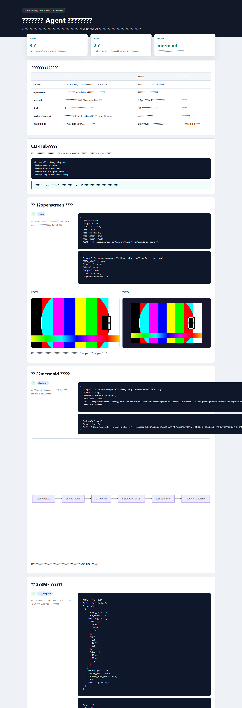

Agent 该怎么发现和调用本地 CLI 工具
这次我实测的是 CLI-Anything / CLI-Hub：让 Agent 自己去找本地可用的命令行工具，读说明、安装、跑 smoke test，最后把真正能用的工具沉淀进工作流。
一句话结论：能用，但不能把它当“万能自动化”。更准确的用法是：把它当成本地 CLI 工具库入口，先发现，再验证，最后只留下跑通的命令。
它解决的不是“有没有工具”，而是“Agent 知不知道怎么用”
本地机器里常常已经有一堆工具：图片处理、视频抽帧、流程图渲染、文件格式解析、网页自动化。问题是 Agent 不一定知道它们存在，也不一定知道怎么调用。
CLI-Hub 的价值就在这里：先搜候选工具，再读工具说明，再跑最小命令。只有能产出真实文件或结构化结果的工具，才值得写进长期工作流。

我按这 5 步跑了一遍
1. 搜索：用关键词找候选 CLI，不先假设哪个工具一定能用。
2. 读说明：看参数、依赖、输入输出，而不是只看工具名。
3. 安装：把依赖装进当前环境，避免“目录里有，实际跑不动”。
4. 小样本验证：必须跑出文件、截图、JSON 或明确错误。
5. 交接沉淀：只把验证过的命令写给后续 Agent。
工具地图：哪些值得进入工作流
CLI-Anything / CLI-Hub
定位是工具发现层。它不负责替你完成所有任务，而是帮 Agent 找到可能有用的 CLI，并把“能不能跑通”变成可验证流程。
openscreen
视频类任务最直观：能读元数据、生成缩略图、渲染片段。适合放进“视频检查、抽帧、轻量预览”的工具箱。
mermaid
最适合长期保留。它能把流程描述转成图，直接服务文章、报告、文档和交接说明。公众号发布时建议转成 PNG。
3MF
它证明这类工具库不只覆盖常见网页和办公场景，也能处理 3D、制造、模型检查这类垂直格式。
成功样本一：openscreen 跑通了视频检查和渲染
openscreen 是这次最容易理解的样本。输入一个短视频，它能读出宽高、时长、编码、音频状态，也能生成缩略图和输出帧。
这类工具可以先进入“轻量视频处理”流程，但要做批量生产，还需要补长视频、无音频、异常编码和大文件测试。
成功样本二：mermaid 更适合做文章和文档配图
mermaid 的价值不在日志，而在可交付图片。流程图、架构图、协作说明、工具链说明都可以从文本直接渲染出来。
我的建议是：源文件保留 SVG 或 Mermaid 代码，但跨平台发布时转成 PNG。公众号、知识库、飞书文档里，PNG 往往更稳定。
成功样本三：3MF 能把工程文件变成结构化结果
3MF 不是大众工具，但它很能说明问题：Agent 不只是写文案，也可能需要读模型、检查几何、比较文件差异。
这类工具不需要常驻普通写作流程，但在模型检查、制造数据审查、工程文件验收里很有价值。
失败样本更重要：目录命中不等于环境可用
这次也有不少工具没能直接跑通。它们不是“没有价值”，而是提醒我：发现工具只是第一层，能不能长期使用还要看环境、依赖和输出质量。
hacker-feeds-cli：遇到模块导入错误，暂时不能直接交给选题工作流。
obsidian-cli：需要本机 Obsidian 和 vault 环境，方向有价值，但要先补齐依赖。
clibrowser：可能需要额外 binary 或 Rust toolchain，先放候选，不进默认浏览器自动化。
libreoffice：适合文档转换，但必须确认本体安装路径和 headless 调用方式。
n8n：更像自动化平台入口，需要本地服务，不是轻量一次性 CLI。
这次真正留下来的工作流
主流程：CLI-Hub 负责发现，具体 CLI 负责执行，smoke test 负责验收。
优先保留：mermaid、openscreen、3MF。
暂缓进入：hacker-feeds、obsidian、clibrowser、libreoffice、n8n，等环境补齐后再测。

给其他 Agent 的交接口令
以后要交给别的线程，不要只说“去找个 CLI”。直接给它这段，它会少走很多弯路。
这篇文章的核心经验其实很简单：Agent 的能力不是“会背工具名”，而是能按固定协议验证工具。发现只是开始，能稳定复用，才算进了工作流。